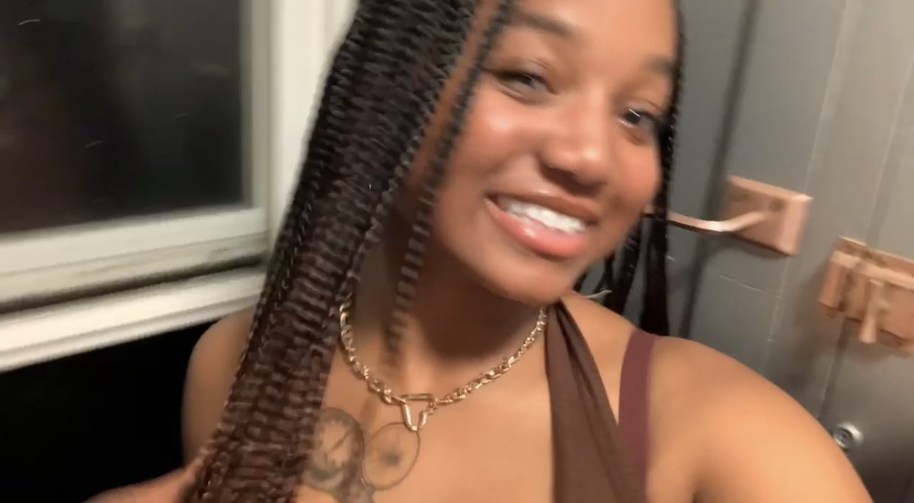

My Intro

Hello World! My name is Sanaia Pierre. I am a second-year student at the California Polytechnic State University in San Luis Obispo, California. I am pursuing a major in Software Engineering and a minor in Architcture. I'm interested in design regarding building and computers.
Outside of school, I enjoy watching movies and TV shows. I am a really big fan of the superhero genre and Star Wars. I enjoy analyzing movies and finding hidden easter eggs throughout. I love seeing callbacks to past movies, I'm big on nostalgia.